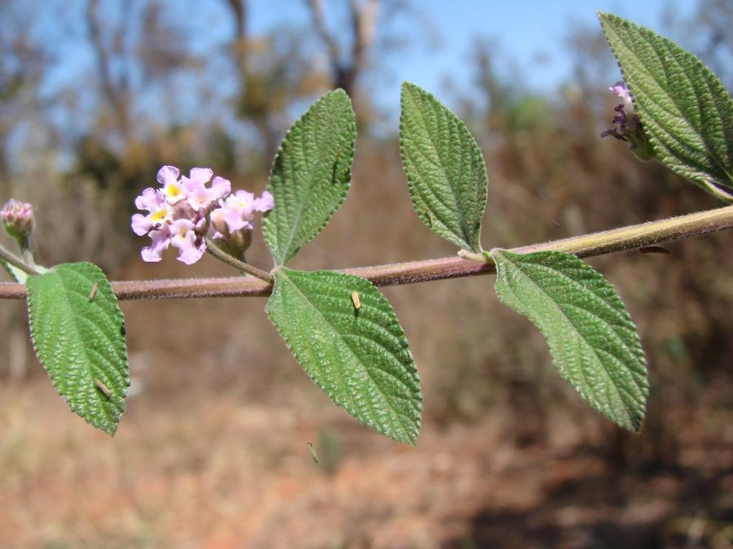

बुशी मैटग्रासBushy Matgrass
Lippia alba · Verbenaceae · FLR-0428

- Scientific name वैज्ञानिक नाम
- Lippia alba (Mill.) N.E.Br. ex Britton & P.Wilson
- Family कुल
- Verbenaceae
- Hindi हिंदी
- बुशी मैटग्रास
- Local names स्थानीय नाम
- bushy matgrass, lippia alba, bushy lippia
- Status here यहाँ की स्थिति
- naturalized
- Movement आवागमन
- Resident, here all year
- Known from कहाँ दर्ज
- Others have published records from the Basti–Ayodhya districts बस्ती–अयोध्या के ज़िलों से दूसरों के प्रकाशित अभिलेख
- IUCN IUCN
- not evaluated
- Review समीक्षा
- not yet reviewed
When to look कब देखें
Present all year. साल भर मौजूद।
Tell it apart from इनसे अलग पहचानें
बुशी मैटग्रास / Bushy Matgrass
Lippia alba (Mill.) N.E.Br. ex Britton & P.Wilson — Verbenaceae
बुशी मैटग्रास — यह दक्षिण और मध्य अमेरिका से आई एक तेज खुशबूदार बारहमासी झाड़ी है जो अब हमारी नदियों के कछारों और नम रास्तों के किनारे प्राकृतिक रूप से उगने लगी है। इसके पत्ते छूने पर नींबू जैसी ताज़ा महक छोड़ते हैं। इसकी टहनियों पर छोटे-छोटे गुलाबी, बैंगनी या सफेद फूलों के गोल गुच्छे खिलते हैं, जिनका केंद्र पीला होता है। इसके फूलों पर तितलियां और मधुमक्खियां मंडराती हैं।
Quick Identification त्वरित पहचान
| Feature | Description |
|---|---|
| Habit | Sprawling, highly branched, aromatic perennial shrub with quadrangular branches |
| Aroma | Intensely fragrant foliage emitting a distinct lemon, camphor, or herbal scent when bruised |
| Leaves | Opposite, simple, ovate to oblong-elliptic, crenate-serrate, rugose above, pubescent beneath |
| Inflorescence | Compact, subglobose to oblong axillary heads borne on slender peduncles |
| Flowers | Small, zygomorphic, pink, purplish, or white with a bright yellow or cream eye |
| Fruit | Small dry schizocarp separating at maturity into two dry, one-seeded pyrenes |
Field tip: Look along sandy stream banks, river silt bars, and irrigation canal borders across the Awadh plain. The pleasant lemon-verbena scent of the crushed serrate leaves and tiny pinkish-purple flower buttons identify it immediately.
हिंदी: नदी किनारे और नहर की पटरियों पर उगने वाली इस झाड़ी के पत्तों को मसलने पर नींबू जैसी सुगंध आती है। इसके छोटे गुलाबी-बैंगनी फूल गोल घुंडी जैसे लगते हैं।
Morphology आकारिकी
| Characteristic | Description |
|---|---|
| Growth-form | Erect to sprawling, densely branched aromatic woody perennial shrub |
| Stems | Slender, ascending, distinctly four-angled, finely puberulous when young |
| Leaf-blade | Ovate to elliptic, acute to obtuse, closely crenate-serrate, base cuneate |
| Venation | Impressed veins creating a distinctly wrinkled, rugose upper surface |
| Inflorescence | Solitary or paired axillary heads, subglobose in flower, slightly elongating |
| Bracts | Broadly ovate to lanceolate, pubescent, enclosing the base of each small flower |
| Corolla | Hypocrateriform, tube slender, limb four-lobed, pale pinkish-violet with yellow throat |
A bushy, multi-stemmed perennial shrub with quadrangular twigs covered in fine puberulence. The leaves are opposite, ovate or elliptic, with serrated margins and a rugose texture marked by glandular hairs that store aromatic volatile oils.
The inflorescences are dense, compact axillary heads supported on slender stalks. The tiny zygomorphic blossoms display pale lilac, pink, or white petals surrounding a bright yellow center. The mature fruit splits into two dry nutlets enclosed within the persistent membranous calyx.
हिंदी: इसका तना चार कोनों वाला होता है और पत्तियां खुरदरी व झुर्रीदार होती हैं। पत्तियों के जोड़ों से डंठल निकलकर छोटे-छोटे गुलाबी फूलों के गुच्छे बनाते हैं।
Behaviour & Ecology व्यवहार और पारिस्थितिकी
Bushy matgrass is a sun-loving, moisture-tolerant shrub capable of thriving across a range of soils, from coarse alluvial sand to compacted riverside clay. Its spreading, semi-prostrate lower branches readily root at the nodes when buried by fresh river silt, forming dense stabilizing mats along erosion-prone embankments.
The aromatic terpenes in its foliage deter generalist grazing herbivores, allowing the shrub to form persistent stands in heavily grazed village commons. The nectar-rich flowers are an important food source for diverse native insects throughout the dry summer and post-monsoon periods.
हिंदी: यह पौधा धूप और नमी वाली जमीन पर तेजी से फैलता है। इसकी निचली टहनियाँ मिट्टी छूने पर नई जड़ें बना लेती हैं, जिससे यह नदी किनारों को कटने से बचाता है।
Life Cycle / Phenology जीवन चक्र
Bushy matgrass is an aromatic perennial shrub with spreading quadrangular branches that maintain vegetative growth across warm riparian soils.
The shrub produces dense axillary flower heads that attract small solitary bees, skippers, and brush-footed butterflies for nectar. Following insect pollination, dry pyrenes develop and disperse along river systems.
हिंदी: यह एक खुशबूदार बारहमासी झाड़ी है जिसकी टहनियाँ नमी वाली मिट्टी पर तेजी से फैलती हैं। इसके गोल फूल गुच्छों पर मधुमक्खियाँ और तितलियाँ परागण करती हैं, और इसके सूखे बीज नदी के पानी के साथ फैलते हैं।
Associated Species / Interactions सहजीवी प्रजातियाँ
Co-occurs along riverbanks and moist wastelands with native trees including जामुन (Syzygium cumini), नीम (Azadirachta indica), and साल (Shorea robusta), as well as wetland herbs like Phyla nodiflora and Persicaria hydropiper.
The compact inflorescences are regularly visited for nectar by diverse pollinators including the lime butterfly (Papilio demoleus), blue tiger (Tirumala limniace), and stingless bees. Its fibrous root networks stabilize riparian sandbars.
हिंदी: यह नदी के किनारे जामुन और नीम के आसपास उगती है। इसके फूलों पर तरह-तरह की तितलियां और मधुमक्खियां रस चूसने आती हैं।
Pests and Diseases कीट और रोग
Bushy matgrass is remarkably free from serious insect pest devastation, protected by its rich repertoire of defensive monoterpenes and sesquiterpenes.
During prolonged, stagnant waterlogging, lower stems may suffer from collar rot caused by Rhizoctonia fungi. Whiteflies and scale insects occasionally settle on the undersides of leaves in protected village gardens during hot, still weather.
हिंदी: इसकी तेज गंध के कारण इस पर कीड़े कम ही लगते हैं। बहुत ज्यादा पानी जमा रहने पर इसकी निचली टहनियों में फफूंद लग सकती है।
Agricultural / Human Relevance कृषि प्रासंगिकता
Bushy Matgrass is an introduced, naturalized aromatic shrub found along sandy river shores and moist wastelands. No medicinal use from an opened source is recorded for this species in the region.
हिंदी: बुशी मैटग्रास एक प्राकृतिक रूप से स्थापित खुशबूदार झाड़ी है जो नदी कछारों और नम बंजर भूमि में पाई जाती है।
Expected Locally स्थानीय रूप से अपेक्षित
Not a field record. Written from published accounts for eastern Uttar Pradesh. No confirmed local sighting yet — if you have seen it, that is what the atlas needs.
अभी तक स्थानीय पुष्टि नहीं। यह विवरण प्रकाशित स्रोतों से है, किसी अवलोकन से नहीं।
GBIF holds published records from these districts.
GBIF holds published records from Sant Kabir Nagar, Gorakhpur, Lucknow and Sitapur. In Basti, Ayodhya, and Sant Kabir Nagar, searchers should inspect sandy river shores and moist roadside ditches. A confirmed field record would consist of a photograph showing the crenate rugose leaves, axillary flower buttons, and sprawling habit with GPS coordinates.
हिंदी: संत कबीर नगर, गोरखपुर, लखनऊ और सीतापुर से इसके प्रकाशित रिकॉर्ड उपलब्ध हैं। बस्ती और अयोध्या में सरयू तथा अन्य नदियों के किनारे इसके सुगंधित पौधों को आसानी से खोजा जा सकता है।
Distribution वितरण
Native to the tropical and subtropical Americas, including southern North America, Central America, the Caribbean, and South America down to northern Argentina. It has been introduced and naturalized across parts of Africa, India, and Southeast Asia.
In India, it is naturalized across the Gangetic plain, eastern India, and the Deccan plateau, particularly along major river basins where floods deposit fresh sand and mud bars.
हिंदी: यह पौधा अमेरिका का मूल निवासी है और अब भारत के कई मैदानी राज्यों में प्राकृतिक रूप से स्थापित हो चुका है। उत्तर प्रदेश में यह नदी कछारों में सबसे ज्यादा मिलता है।
Research Questions शोध प्रश्न
- Which chemotype of Lippia alba (citral, carvone, or linalool dominant) characterizes naturalized populations in the Awadh plain?
- How effective is the sprawling root architecture of this shrub in mitigating stream bank erosion along sandy silt river channels?
- क्या इस पौधे के आवश्यक तेल में स्थानीय मच्छर प्रजातियों के खिलाफ विकर्षक गुण मौजूद हैं?
- What role do seasonal river floods play in dispersing vegetative fragments and pyrenes along the Ghaghara basin?
- क्या इसकी व्यावसायिक खेती से किसानों को एरोमैटिक ऑयल उद्योग से अतिरिक्त आय मिल सकती है?
हिंदी: क्या सरयू नदी के कछार में उगने वाली इस झाड़ी के तेल से मच्छर भगाने वाली प्राकृतिक दवा बनाई जा सकती है, इस पर अध्ययन की जरूरत है।
Similar Species मिलती-जुलती प्रजातियाँ
| Species | Key Differences | Habitat / Occurrence | |
|---|---|---|---|
| Phyla nodiflora (Bhuiokara) | Prostrate creeping herb rooting at nodes; heads cylindric; flowers tiny, pink-white | Saturated lawns, mud flats, and pond edges | |
| *[[lantana_camara\ | Lantana]] camara* (Lantana) | Prickly woody shrub; flowers multi-coloured (orange, yellow, pink, red); fleshy berries | Invasive thicket-forming weed across wastelands |
| Hyptis suaveolens (Ganga [[tulsi\ | Tulsi]]) | Erect aromatic herb; blue-purple two-lipped flowers; calyx teeth spiny in fruit | Dry roadsides, railway tracks, and scrub wastelands |
| [[neem | नीम (Azadirachta indica)]] | Large evergreen tree; pinnate serrate leaves; white flowers | Common native tree across villages and roadside avenues |
Field rule: A sprawling aromatic riparian shrub with wrinkled serrate leaves smelling strongly of lemon or verbena and small axillary pink-and-yellow button-like flower heads is Lippia alba.
हिंदी: भुईओकरा (Phyla nodiflora) जमीन पर रेंगने वाला छोटा पौधा है, जबकि बुशी मैटग्रास एक खड़ी और फैली हुई मजबूत झाड़ी है।
Taxonomy & Classification वर्गीकरण
Original description. First described as Lantana alba by Philip Miller in 1768 in The Gardeners Dictionary, eighth edition. Nicholas Edward Brown transferred it to Lippia, and the combination was formally validated by Nathaniel Lord Britton and Percy Wilson in 1925 in Scientific Survey of Porto Rico and the Virgin Islands, volume 6, page 141 (Lippia alba (Mill.) N.E.Br. ex Britton & P.Wilson).
Subspecies. Monotypic; no valid subspecies are recognized, though several distinct chemical races (chemotypes) are distinguished based on essential oil composition.
Family and order placement. Belongs to the verbena family Verbenaceae, tribe Verbeneae, and order Lamiales.
IUCN status rationale. Not Evaluated (NE) on the IUCN Red List due to its introduced, naturalized status and widespread global distribution in anthropogenic and riparian habitats.
हिंदी: मिलर ने 1768 में इसे लैंटाना वर्ग में रखा था, जिसे 1925 में ब्रिटन और विल्सन ने लिपिया में स्थानांतरित किया। यह वर्बेनेसी कुल का पौधा है और आईयूसीएन द्वारा मूल्यांकित नहीं है।
Photo Gallery फोटो गैलरी
No photos yet. (Contributions welcome!)
References संदर्भ
- Britton, N. L. & Wilson, P. (1925). Scientific Survey of Porto Rico and the Virgin Islands, Vol. 6. New York Academy of Sciences, New York, p. 141.
- Duthie, J. F. (1911). Flora of the Upper Gangetic Plain, and of the Adjacent Siwalik and Sub-Himalayan Tracts, Vol. 2. Superintendent of Government Printing, Calcutta, p. 217.
- Kirtikar, K. R. & Basu, B. D. (1918). Indian Medicinal Plants, Part 1. Panini Office, Bhuwaneshwari Asrama, Bahadurganj, Allahabad, p. 526.
- Hooker, J. D. (1885). The Flora of British India, Vol. 4. L. Reeve & Co., London, p. 563 (as Lippia geminata).
- Plants of the World Online (POWO) (2026). Lippia alba (Mill.) N.E.Br. ex Britton & P.Wilson. Facilitated by the Royal Botanic Gardens, Kew.
- GBIF Secretariat (2026). Lippia alba (Mill.) N.E.Br. ex Britton & P.Wilson. GBIF Backbone Taxonomy. Checklist dataset https://doi.org/10.15468/39omei.
Source file: species/flora/shrubs/bushy_matgrass.md